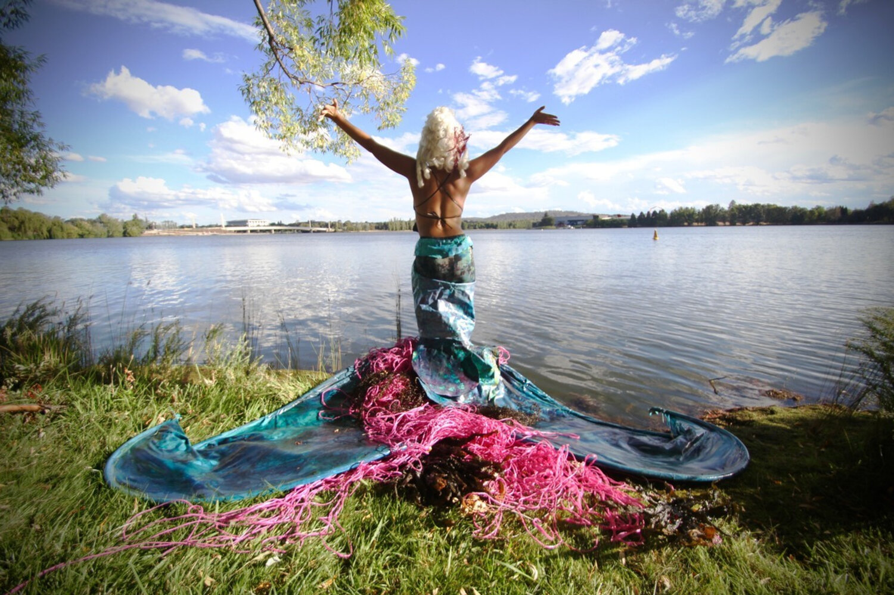

Contour 556 is Canberra's biennial public art festival, curated by Neil Hobbs.Contour 556 is the water level of Lake Burley Griffin, which links the event in name as well as in purpose to the history of the central Canberra landscape.
The artworks and installations selected for the festival respond in some way to Canberra’s history, from 50,000 years to the present day. contour 556 will therefore offer the Canberra, Australian and international community a unique opportunity to engage with and understand the layers of Canberra’s history through art.

Contour 556 | 2020
The event launched on Friday 9th October, at King O’Malleys outdoor roof terrace at 131 City Walk, Civic. contour 556 was opened by Senator Katy Gallagher, to an enthusiastic crowd of 120 people. The third edition of contour 556 concluded on Saturday October 31st 2020.
Contour 556 | 2018
A free public art event over three weeks presenting artworks and performances by 60 artists in the world famous public realm and national cultural icons around Lake Burley Griffin, Canberra. contour is unique in the field of public sculpture and performance events as it takes place in a consciously designed and culturally layered landscape, in one of only three designed capital cities.
Contour 556 | 2016
Contour 556 saw 41 artworks and performances by 48 local, national and international artists installed on the lake shore and around the Kingston Arts Precinct. The artworks transformed iconic designed landscapes within the central lake area such as Bowen Park, Central Basin, The National Library foyer and forecourt, the National Gallery of Australia Sculpture Garden, Megalo Print Studios and the Fitters Workshop.